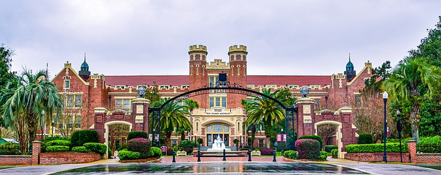

Discover Florida: A Beacon of Diversity and Progress
 Tallahassee, the vibrant capital city of Florida, holds a unique position as the seat of government and a center of cultural and historical significance. We will delve into key aspects of Tallahassee, including its population, year of incorporation, regional location, city classification, and economic profile.
Tallahassee's population is a testament to its significance within the state. As of the latest census data, the city is home to approximately 194,500 residents (U.S. Census Bureau, 2020). Established long before Florida became a state, Tallahassee was incorporated in 1824 (City of Tallahassee, n.d.). Its rich history dates back to Native American settlements and European exploration, shaping its unique character and diversity.
Tallahassee is situated in the northern region of Florida, commonly referred to as the "Florida Panhandle." This region is known for its distinct cultural influences, blending Southern traditions with coastal charm. Its proximity to neighboring states adds to its cultural tapestry, making Tallahassee a fascinating crossroads of history and modernity.
Classified as an urban city, Tallahassee boasts a vibrant urban landscape while retaining a touch of the Old South's charm. Tallahassee's economic landscape is diverse, with government, education, and research institutions playing pivotal roles. As the state capital, the city hosts government agencies and institutions, contributing significantly to its economic activity.
Tallahassee's average income level is a noteworthy aspect of its economic profile. The city's median household income is $46,372, according to recent data (U.S. Census Bureau, 2020). While this figure places Tallahassee below the national median income, it's important to consider the city's unique role as a government and education hub.
Tallahassee's historical legacy, regional importance, urban classification, and economic vitality combine to make it a dynamic and influential city within Florida. With its diverse population and pivotal role in state affairs, Tallahassee continues to evolve as a symbol of Florida's past, present, and future.
References:
- City of Tallahassee. (n.d.). Tallahassee History. Retrieved from https://www.talgov.com/Main/Home.aspx
- U.S. Census Bureau. (2020). QuickFacts: Tallahassee city, Florida. Retrieved from https://www.census.gov/quickfacts/tallahasseecityflorida
- U.S. Census Bureau. (2021). QuickFacts: Florida. Retrieved from https://www.census.gov/quickfacts/fact/table/FL/PST045222